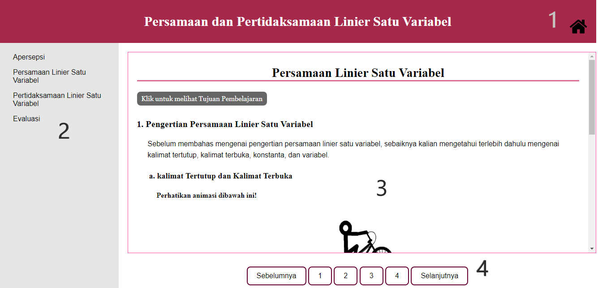

Deskripsi
Media pembelajaran ini dibuat untuk memenuhi persyaratan dalam menyelesaikan Program Strata-1
Pendidikan Ilmu Komputer dengan judul tugas akhir:
Pengembangan Media Pembelajaran Interaktif Berbasis Web Materi Persamaan dan Pertidaksamaan
Linier Satu Variabel Kelas VII dengan Metode Drill and Practice
Tentang Author
| Nama | : | Siti Aisyah |
| : | sitiaisyaah2998@gmail.com | |
| Dosen Pembimbing 1 | : | Dra. Hj. Noor Fajriah, M.Si |
| Dosen Pembimbing 2 | : | Nuruddin Wiranda, S.Kom, M.Cs. |
| Program Studi | : | S1 Pendidikan Komputer |
| Fakultas | : | Keguruan dan Ilmu Pendidikan |
| Instansi | : | Universitas Lambung MAngkurat |
Petunjuk Aplikasi
-
Home
Jika icon ditekan, maka akan mengarahkan pengguna ke halaman utama.
ditekan, maka akan mengarahkan pengguna ke halaman utama.
-
Daftar Isi
Navigasi ini terletak di bagian kiri yang berisi judul tiap subbab pada bab Persamaan dan Pertidaksamaan Linier Satu Variabel. -
Kolom Materi
Akan disajikan materi, contoh soal, latihan, kuis, dan evaluasi secara interaktif pada kolom materi ini. -
Navigasi Halaman
Navigasi ini terletak di bagian bawah kolom materi. Navigasi ini bersifat linear, yang mana pengguna dapat berpindah ke halaman selanjutnya atau ke halaman sebelumnya.
Daftar Pustaka
Abdur Rahman As’ari, M. T. (2017). Buku Guru Matematika. Jakarta: Kementerian Pendidikan dan Budaya.
Abdur Rahman As’ari, M. T. (2017). MATEMATIKA SMP/MTs Kelas VII Semester 1. Jakarta: Kementerian Pendidikan dan Budaya.
Muklis, A. Y. (2019). Matematika SMP/MTs Kelas VII Semester 1. Yogyakarta: PT. Pnerbit Intan Pariwara.
Suwah Sembiring, G. A. (2016). Matematika untuk siswa SMP-MTs Kelas VII. Bandung: Yrama Widya.